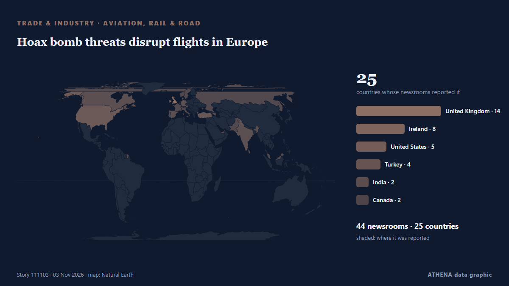

Handel, Industrie und Infrastruktur
GesponsertPräsentiert von  Cybernetics and Artificial Intelligence Lab Welcome to the Cybernetics and Artificial Intelligence Laboratory, established at the Department of Business Administration of the National and Kapodistrian University of Athens. The lab is headed by Professor Dimitrios Thomakos. The lab aims to do research that can be published in top venues. Our research uses tools and methods of Artificial Intelligence, and lies in the following areas: - Forecasting - Decision making - Cyber security - Finance We are always looking forward to collaborating with exceptional students!
Cybernetics and Artificial Intelligence Lab Welcome to the Cybernetics and Artificial Intelligence Laboratory, established at the Department of Business Administration of the National and Kapodistrian University of Athens. The lab is headed by Professor Dimitrios Thomakos. The lab aims to do research that can be published in top venues. Our research uses tools and methods of Artificial Intelligence, and lies in the following areas: - Forecasting - Decision making - Cyber security - Finance We are always looking forward to collaborating with exceptional students!
Schlagzeilen werden auf Englisch angezeigt, wie veröffentlicht.

Luftfahrt, Bahn und StraßeHoax bomb threats disrupt flights in Europe
Several European flights were targeted by bomb threats on Tuesday, forcing the temporary closure of an airport, but all planes landed safely and no explosives were found, authorities said. von The Local Denmark
| 21. Okt. | 40 |
|---|---|
| 22. Okt. | 95 |
| 23. Okt. | 73 |
| 24. Okt. | 41 |
| 25. Okt. | 57 |
| 26. Okt. | 117 |
| 27. Okt. | 103 |
| 28. Okt. | 94 |
| 29. Okt. | 95 |
| 30. Okt. | 99 |
| 31. Okt. | 36 |
| 1. Nov. | 64 |
| 2. Nov. | 110 |
| 3. Nov. | 36 |
Food Spending in Kazakhstan Tops Half of Consumer Budgets
Kazakhstan, Central Asia’s largest economy, ranks among the ten countries with the highest shares of consumer spending devoted to food. von The Times of Central Asia
King stops short of offering formal apology over transatlantic slave trade
In his address to presidents and prime ministers of the Commonwealth Charles said the transatlantic slave trade fills his heart with horror. von Evening Standard (London)
Israeli plane lands in Sofia after bomb threat email
Flight details remain unclear as incident follows 2 recent bomb scares involving aircraft bound for Sofia, Vienna. von Anadolu Agency (English)
Trump floats 'concept' of US-Canada deal that includes pipeline talking to Carney
MONTREAL/DUBUQUE, Iowa — US President Donald Trump said on Sunday that his administration has the “concept” of a… von BusinessWorld
Bosch gives chips their own division, eyeing €5bn in sales by 2030
Bosch will move its semiconductor business into a dedicated division from January 2028, as the German supplier looks to expand chip sales beyond the automotive industry. von The Next Web
KONGSBERG expands underwater surveillance technology for port security
KONGSBERG has launched two new sonar systems designed to improve underwater surveillance, navigation and the protection of critical maritime infrastructure. von Container News
Trump to remove Rwanda and South Africa from US trade deal
The move comes barely a week after Rwanda's defence ministry was hit with sanctions by the US Treasury. von BBC News
Ryanair to review pay freezes and AI use to counter jet fuel price surge
The Dublin-based airliner said it was predicting a jump of roughly two billion euros in its fuel bill for the year to March 2028. von Evening Standard (London)
U.S. to suspend South Africa, Rwanda from duty-free trade access
Trump terminates South Africa from AGOA Vusi.Bafetane Mon, 11/02/2026 - 19:32 WASHINGTON - The United States Trade Representative on Monday said Washington would exclude South Africa and Rwanda from… von eNCA
Iran's IRGC Navy says two oil tankers exploded after hitting mines in Hormuz
Coalition says it destroyed two ballistic missile launchers The Coalition has released footage it says shows the targeting and destruction of two ballistic missile launch platforms. von Gulf News
Kazakhstan and Azerbaijan sign agreements for Caspian ferry system and Baku terminal
Kazakhstan and Azerbaijan have signed two agreements to develop transport and logistics connections across the Caspian Sea, including a proposed ferry system and an intermodal cargo terminal at the… von Container News
TotalEnergies sheds partial stake ahead of appraisal ops at Nigerian block
TotalEnergies has set the wheels in motion to sell a partial interest in an offshore block to SAPETRO to fast-track the appraisal of a Nigerian field. von Offshore Energy
Armenia has effectively begun implementing TRIPP project, Pashinyan says
The Government of Armenia has effectively already begun implementing the “Trump Route for International Peace and Prosperity” (TRIPP) project, Prime Minister Nikol Pashinyan told lawmakers on Monday… von AzerNews
US Strikes Iranian Targets in the Strait of Hormuz, Official Says
The drop reflects traders trimming some of the geopolitical premium built into crude in recent weeks rather than any change in physical supply, which remains constrained while Hormuz flows are… von investingLive (ForexLive)
Restoration continues to open Hagia Sophia’s underground chambers to visitors
Restoration work at Istanbul’s 1,500-year-old Hagia Sophia is continuing with the aim of opening parts of its previously inaccessible underground tunnels, chambers and burial structures to visitors… von Hürriyet Daily News
Indian Navy Rescues 20 Crew Members From Pirated Vessel Azini In 48-Hour Op
The operation was successfully carried out on November 2, with the Indian Navy locating and intercepting the vessel and securing the safe release of all crew members from heavily armed pirates. von NDTV
BTS Jimin's father's cafe announces closure in one year
ZM-illennial, a cafe in Busan operated by BTS member Jimin's father, has announced plans to close in one year. von Korea Herald
Greece Unveils 2026–2030 Plan to Build a Semiconductor Industry
Greece has opened a draft national strategy for semiconductors and microelectronics for public consultation, setting out how the country hopes to build a larger role in chip design, research and… von Greek Reporter
MacGregor secures retrofit contract for 35 Wallenius Wilhelmsen vessels
MacGregor has secured a contract to upgrade Programmable Logic Controller (PLC) systems aboard 35 Pure Car and Truck Carrier (PCTC) vessels operated by Wallenius Wilhelmsen. von Container News
NAVTOR introduces real-time AIS streaming in NavFleet platform
Maritime technology company NAVTOR has introduced real-time AIS streaming to its NavFleet platform, allowing fleet managers to monitor vessel positions, movements and surrounding traffic with minimal… von MarineLink
Vessel struck by unknown projectile off Oman: UK maritime agency
Projectile leaves hole in vessel's starboard side near Lima, with crew reported safe, says UKMTO. von Anadolu Agency (English)
Five arrested after South African farmer shot and tortured
The attack on Donovan Marx, 50, comes as right-wing groups say there is a genocide of white people - a claim widely discredited. von BBC News
Vessel Struck in Strait of Hormuz
Data and insights tracking transit activity, oil prices, petroleum reserves, supply chain impacts and geopolitical developments affecting the waterway. von IndustryWeek
Trump administration promised farmers $15 billion in weeks before midterms
President Donald Trump's administration has made $15 billion worth of promises to agriculture producers in the last few weeks before the midterm elections. von PBS NewsHour
Met Éireann issues Status Yellow fog warning for eight counties
The forecaster is warning of possible travel delays through the morning. von Bristol Post
3 Steps to Guard Burkina Faso Domain Names
Burkina Faso domain names can be lost to a missed renewal or a lookalike site. von The Rio Times
Iran’s export to Turkey rises 59% in H1
Director General of the West Asia and Africa Office of the Iran Trade Promotion Organization, while describing Iran’s trade trend with some West Asian countries as positive, announced a 59 percent… von Tehran Times
Serbia remembers 16 killed in Novi Sad canopy collapse 2 years on
The student movement called on citizens to attend a memorial gathering in Novi Sad on Sunday, November 1, to commemorate the victims of the train stat. von N1 Serbia (English)
Tanzanian-flagged merchant vessel sunk off the coast of Cyprus
MSC Hannah III rescued all 10 crew members from the Tanzanian-flagged commercial vessel AS Dream after it began sinking west of Cyprus. von Container News
Eni begins gas production at Maha field offshore Indonesia
Eni has commenced gas production from the Maha field, situated in the West Ganal block of the Kutei Basin offshore Indonesia. von Offshore Technology
Hormuz shipping still faces major risks
The Strait of Hormuz remains dangerous and costly for shipping, despite US claims that it is open. von Al Jazeera English
Malaysia Airlines says customers may be affected by Amadeus breach
The incident may have affected information processed between August 2023 and September 2026, the airline said on Sunday (Nov 1). von CNA (Channel NewsAsia)
Seoul to launch emergency response system for Czech nuclear project
SEOUL, Nov. 2 (Yonhap) -- South Korea will launch an emergency management system... von Yonhap (English)
SFL Newbuild agreements and long-term charters of two 8,800 TEU container vessels and one very large ammonia carrier
SFL Corporation announced that it has agreed to acquire two 8,800 TEU Container Vessels with scheduled delivery in 2027 and. von Cyprus Shipping News